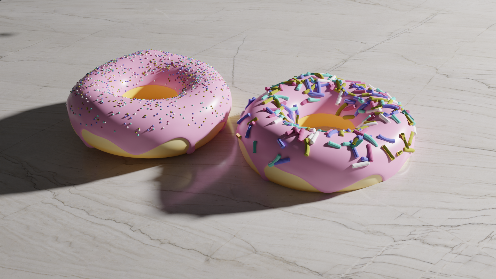

Stormy Ocean
Atmospheric Simulation Study
About the Project
A deep dive into procedural ocean generation and atmospheric lighting. This project explores the chaotic beauty of open waters during a storm, focusing on foam generation, subsurface scattering, and volumetric fog.
The goal was to create a cinematic sense of scale and isolation. Using Blender's ocean modifier and dynamic fluid baking, I was able to simulate the complex interaction between light and turbulent water.
Technical Data
- Software Blender 5.0
- Engine Cycles X
- Focus Ocean Modifier / Volumetrics / Particle Systems / Shader Node-Based Materials / Procedural Animation
- Date Jan 2026
The Donut
My First Blender Project

Origin Story
This is where my 3D journey began. Like many others, I started with the famous "Donut Tutorial" on YouTube. This project was my very first introduction to the world of Blender, teaching me the fundamentals of modeling, texturing, lighting, and rendering.
Although simple, this project holds a special place in my portfolio as it represents the spark that ignited my passion for 3D art. I learned how to use geometry nodes for the sprinkles and procedural texturing for the bread.
Technical Data
- Software Blender 5.0
- Guide Blender Guru
- Focus Modeling Basics
- Date Dec 2025